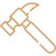
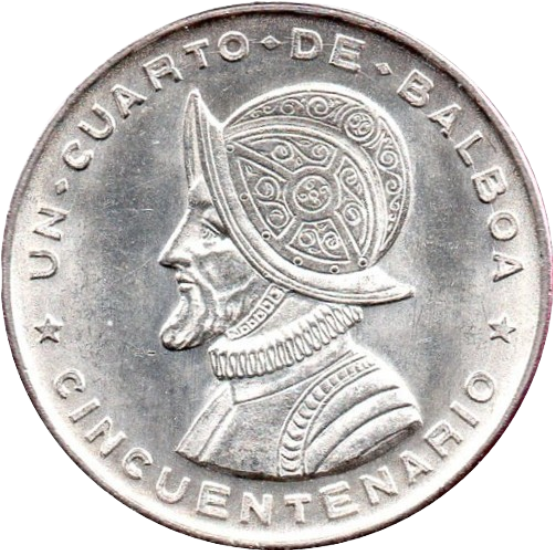
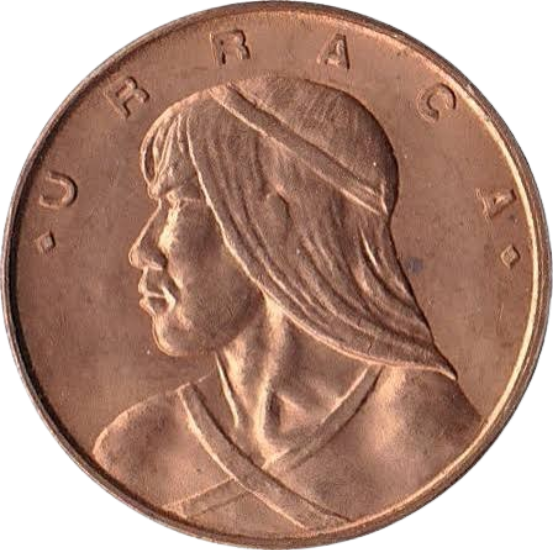
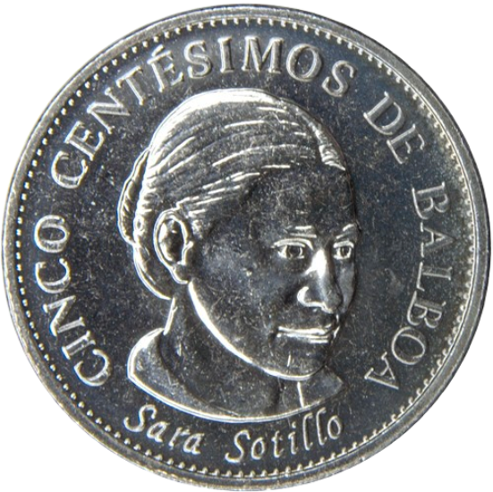
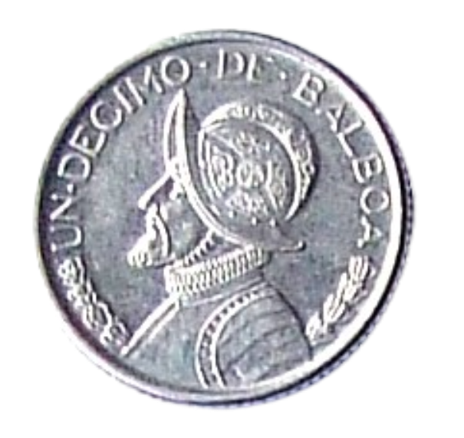
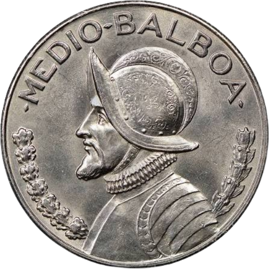
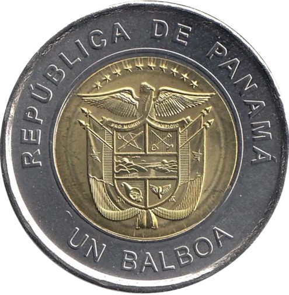

¿Qué es una moneda?
Una moneda es una pieza metálica creada por un gobierno o institución autorizada que tiene un valor establecido y se utiliza como medio de pago para comprar bienes y servicios

Medio de pago
Permite comprar y vender productos y servicios de forma rápida y sencilla.

Valor garantizado
Su valor es reconocido oficialmente dentro del sistema monetario del país.

Duraderas
Están fabricadas con materiales resistentes para soportar el uso diario durante muchos años.

Respaldo oficial
Son emitidas por autoridades competentes y forman parte del sistema monetario oficial
¿Por qué se dice "Cuara"?
En Panamá, "cuara" es el nombre popular que recibe la moneda de 25 centésimos de balboa (B/.0.25).
Este término proviene de la adaptación de la palabra inglesa "quarter", utilizada para referirse a la moneda estadounidense de un cuarto de dólar.
La cuara es una de las monedas más utilizadas en la vida cotidiana de los panameños y forma parte de la cultura popular del país.

BREVE HISTORIA DE LA MONEDA
Nace el Balboa
Tras la separación de Panamá de Colombia, el Balboa fue adoptado como moneda oficial de la República de Panamá.
Paridad con el dólar
Desde su creación, el Balboa mantiene el mismo valor que el dólar estadounidense: 1 Balboa = 1 Dólar estadounidense
La "Cuara"
Los panameños comenzaron a utilizar la palabra "cuara" para referirse al cuarto de balboa o cuarto de dólar.

Actualidad
La cuara sigue siendo una de las monedas más utilizadas para compras y pagos cotidianos en todo el país.
¿POR QUÉ SON IMPORTANTES LAS MONEDAS?
Compras diarias
Se utiliza frecuentemente para pequeños pagos y transacciones del día a día.
Parte de la cultura
La palabra "cuara" forma parte del vocabulario cotidiano de los panameños y de sus costumbres.
Equivale a B/.0.25
Representa la cuarta parte de un balboa, manteniendo el mismo valor dentro del sistema monetario panameño.
Circulación nacional
Forma parte del sistema monetario de Panamá y circula junto con otras monedas de balboa y el dólar estadounidense.
Denominaciones actuales
Actualmente circulan las siguientes monedas panameñas:

Un centésimo de balboa
Apodo: Un centavo
B/. 0.01

Cinco centésimos de balboa
Apodo: Un real
B/. 0.05

Un décimo de balboa
Apodo: Un dain
B/. 0.10
Un cuarto de balboa
Apodo: Cuara
B/. 0.25

Medio balboa
Apodo: Un peso
B/. 0.50

Un balboa
Apodo: Martinelli
B/. 1.00
Materiales de fabricación
Las monedas de Panamá se han fabricado principalmente con plata, cobre-níquel y acero revestido a lo largo de su historia.
- 1 Balboa: Cobre bañado en cuproníquel o aleaciones bimetálicas en emisiones recientes (anillo gris y centro dorado).
- 50 y 25 Centésimos: Cuproníquel (aleación de 75% de cobre y 25% de níquel).
- 10 y 5 Centésimos: Latón (aleación de cobre y zinc) o níquel-latón.


Diseño de la moneda
- Escudo de la República de Panamá
- Nombre "República de Panamá"
- Año de emisión
- Valor nominal
- Diseños conmemorativos en algunas emisiones especiales
Panamá es uno de los pocos países que comparte su sistema monetario con el dólar estadounidense.
Las monedas panameñas circulan junto a las monedas estadounidenses en la vida diaria.

Algunas monedas conmemorativas nunca llegan al comercio; son exclusivas para coleccionistas.

Las monedas antiguas de Panamá pueden alcanzar alto valor en subastas internacionales.